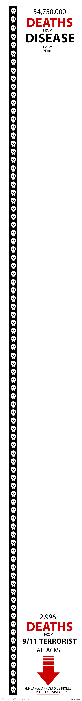

3 The Staggering Cost of Disease
4 We’re Losing $100+ Trillion Every Year to Disease
We spend more money fighting disease than most countries’ entire economies. But healthcare spending is just the tip of the iceberg. When you add up all the costs—lost productivity, caregiving, and the economic value of lost life—we’re losing over $100 trillion every year. That’s the entire global economy disappearing into a black hole.
Here’s how we calculated this:
| Cost Category | Description | Annual Global Cost (USD) |
|---|---|---|
| 1. Direct Costs | Healthcare spending on doctors, hospitals, and medicine. | ~$9.9 Trillion |
| 2. Indirect Costs | Lost economic productivity from sickness and caregiving. | ~$5 Trillion |
| 3. Lost Human Life | Economic value of years lost to premature death (YLL). | Included in DALYs |
| 4. Lost Health | Economic value of healthy years lost to disability (DALYs). | ~$94.2 Trillion |
| Total Annual Cost | Comprehensive Economic Burden of Disease | ~$109.1 Trillion |
4.1 The Math Behind Our $100 Trillion Problem
We’re adding up four types of losses:
\[ C_{Total} = C_{Direct} + C_{Indirect} + V_{DALY} \]
4.1.1 1. Direct Costs: ~$9.9 Trillion
This is what we actually spend on healthcare—doctors, hospitals, medicine. We spend 9.8% of global GDP on health. That’s nearly $10 trillion a year, and we’re still losing the fight against diseases that shouldn’t exist.
4.1.2 2. Indirect Costs: ~$5 Trillion
When people get sick, they can’t work. When their family members have to care for them, they can’t work either. Just chronic diseases will cost us $47 trillion between 2011-2030. That’s $2.3 trillion per year, and we’re being conservative at $5 trillion for all diseases.
4.1.3 3. The Value of Lost Life and Health (DALYs): ~$94.2 Trillion
This is the big one that everyone ignores. When someone dies at 40 instead of 80, we lose 40 years of their productive life. When someone spends 10 years disabled by disease, we lose those healthy years too. Economists measure this in Disability-Adjusted Life Years (DALYs)—each one is a lost year of healthy life.
Here’s how we put a price tag on human suffering:
4.1.3.1 Step 1: Quantify the Total Burden of Disease
The Global Burden of Disease study tracks this worldwide. In 2019, we lost 2.55 billion healthy life years to disease, disability, and premature death.
- Total DALYs: 2.55 Billion
4.1.3.2 Step 2: Monetize the Value of a Healthy Life-Year
Public health economists routinely put dollar values on human life. The World Health Organization says one healthy year is worth 1 to 3 times a country’s GDP per capita (WHO-CHOICE methodology).
Using the WHO’s conservative multiplier of 3x and global average GDP per capita of $12,263, here’s what one lost healthy year costs us:
- Global GDP per Capita (2022): $12,263
- WHO Multiplier: 3x
- Value per DALY (\(V_{DALY}\)): 3 * $12,263 = $36,789
4.1.3.3 Step 3: Calculate the Total Economic Value
\[ Value = Total DALYs \times V_{DALY} \] \[ Value = 2,550,000,000 \times \$36,789 \] \[ Value \approx \$94.2 \text{ Trillion} \]
That $94.2 trillion represents all the careers cut short, the innovations never pursued, and the lives lived in pain instead of productivity.
4.2 This Is the Problem We Can Actually Solve
We’re losing more money to disease than we can wrap our heads around. It’s 10 times what we spend on militaries worldwide. It’s a permanent tax on humanity that makes every other problem look tiny. Unlike climate change or nuclear war, this isn’t a future threat—it’s destroying our families and economies right now.

But here’s the thing: disease isn’t inevitable. The human body is a machine—a really complicated, old machine—but machines can be fixed. Cancer, Alzheimer’s, heart disease—these aren’t laws of physics. They’re engineering problems we haven’t solved yet because we know almost nothing about how biology actually works.

We’ve identified 166 billion potential treatments that could cure diseases. How many have we tested? Almost none. We’re sitting on the largest library of potential cures in human history and we’re not even looking at the books.

Somewhere in the future, maybe 10 years, maybe 100, maybe 1,000 years, there will be a day when we finally understand human biology completely. When we can prevent, reverse, and repair any disease at low cost. When cancer becomes as trivial as a scraped knee.
Every SINGLE DAY we delay reaching that future costs us $299 BILLION DOLLARS. $299 billion more money than most countries’ entire economies. That’s the daily price of messing around with wars and other nonsense instead of hurrying up.
This $109 trillion loss represents the Health Dividend—the economic value we’ll capture when we stop people from dying of preventable diseases. Just like the $16.5 trillion Peace Dividend we get from reducing violence, the Health Dividend is massive, measurable, and waiting for us to claim it.
This is why we’re creating War on Disease VICTORY bonds to capture a tiny part of it to generate the action energy to make it happen. It’s also the biggest investment opportunity in human history.